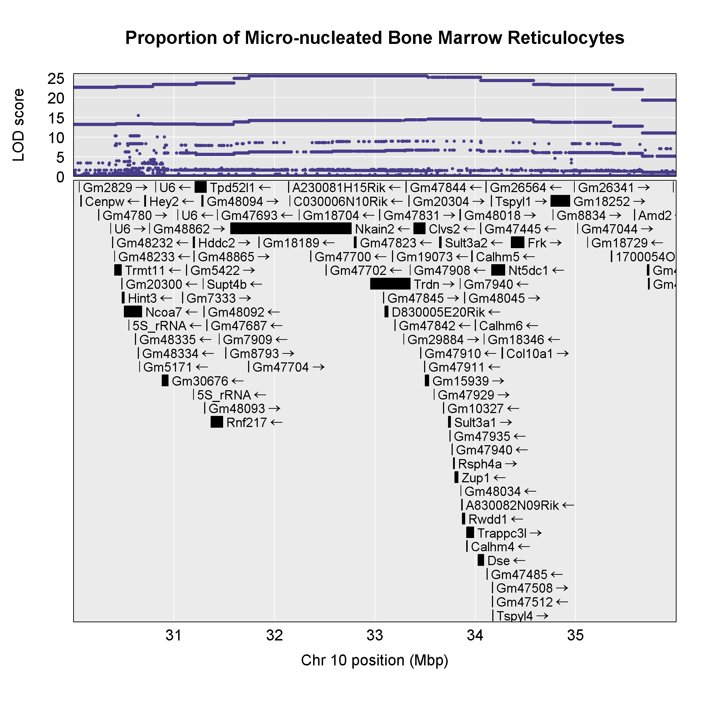
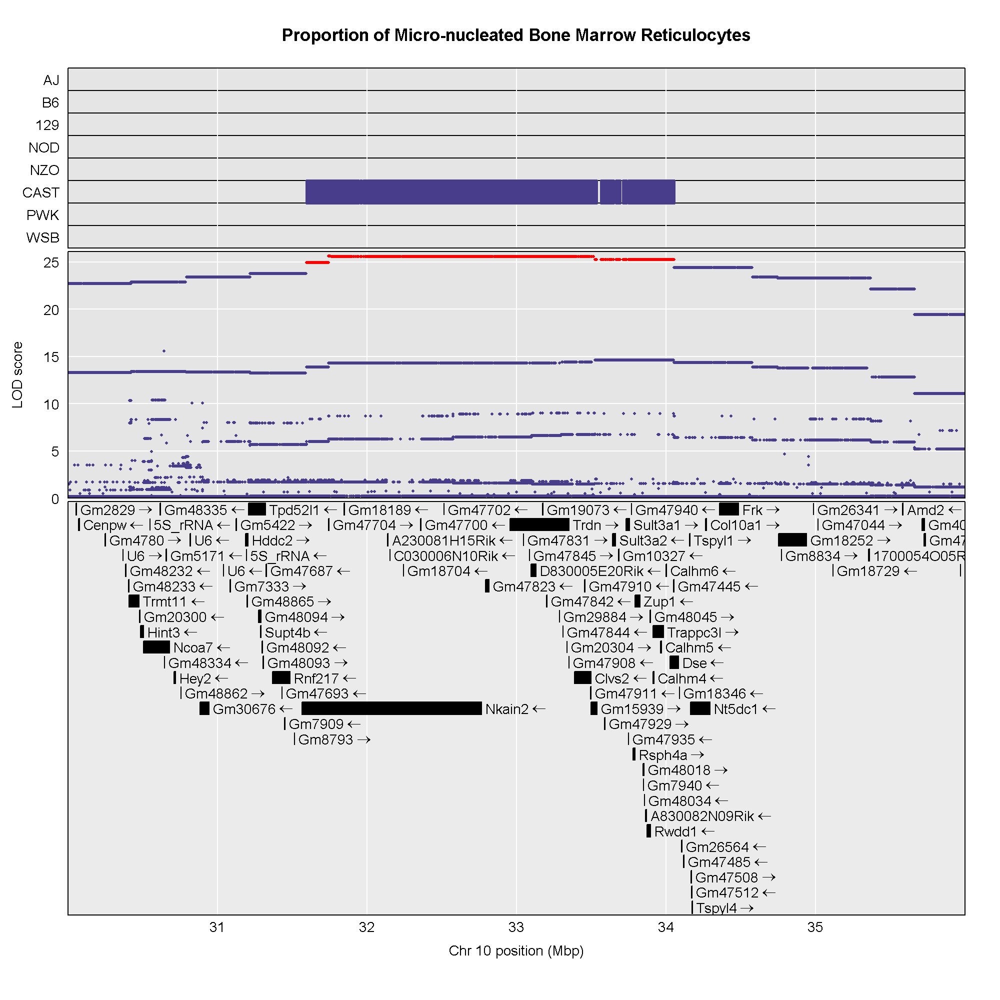
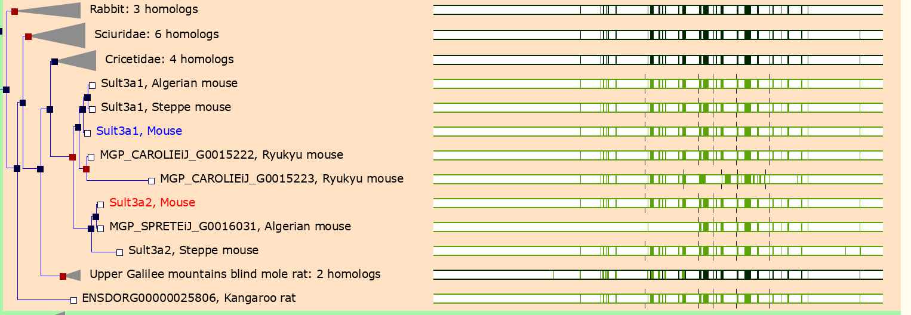
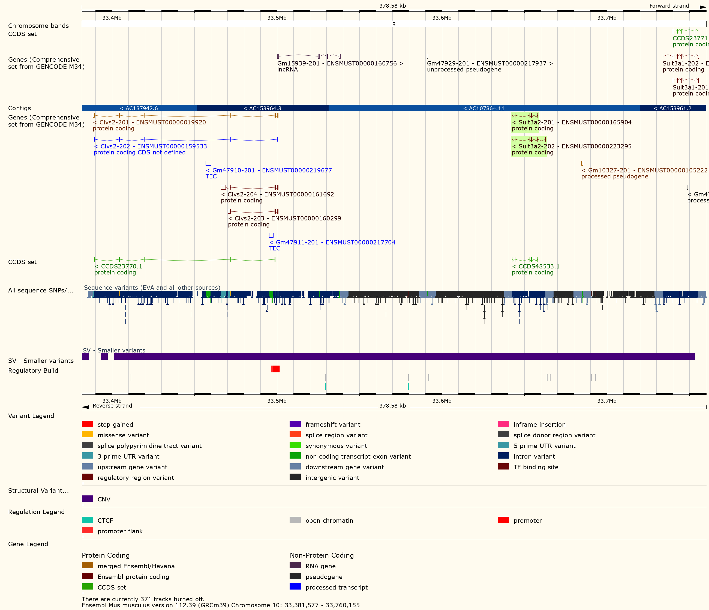

QTL Mapping in Diversity Outbred Mice
Last updated on 2024-10-09 | Edit this page
Overview
Questions
- How do I map traits in Diversity Outbred mice?
- How do I interpret the founder allele effects at a QTL peak?
- How do I perform association mapping in Diversity Outbred mice?
- How do I narrow down the set of candidate genes under a QTL?
Objectives
- Understand the data objects required for QTL mapping.
- Use the scan1 family of functions to perform different types of QTL scans.
- Interpret the founder allele effects.
- Find significant QTL peaks and identify candidate peaks under a QTL peak.
- Use auxiliary data to identify candidate genes under a QTL peak.
Introduction
This tutorial will take you through the process of mapping a QTL and searching for candidate genes for DNA damage from benzene exposure. The adverse health effects of benzene, including leukemia and aplastic anemia, were first studied in occupational settings in which workers were exposed to high benzene concentrations. Environmental sources of benzene exposure typically come from the petrochemical industry, however, a person’s total exposure can be increased from cigarettes, consumer products, gas stations, and gasoline powered engines or tools stored at home.
Exposure thresholds for toxicants are often determined using animal models that have limited genetic diversity, including standard inbred and outbred rats and mice. These animal models fail to capture the influence of genetic diversity on toxicity response, an important component of human responses to chemicals such as benzene. The Diversity Outbred (DO) mice reflect a level of genetic diversity similar to that of humans.
The data comes from a toxicology study in which Diversity Outbred (DO) mice were exposed to benzene via inhalation for 6 hours a day, 5 days a week for 4 weeks (French, J. E., et al. (2015) Environ Health Perspect 123(3): 237-245). The study was conducted in two equally sized cohort of 300 male mice each, for a total of 600 mice. They were then sacrificed and reticulocytes (red blood cell precursors) were isolated from bone marrow. The number of micro-nucleated reticulocytes, a measure of DNA damage, was then measured in each mouse. The goal is to map gene(s) that influence the level of DNA damage in the bone marrow.

DO Reference Data
As you work with DO data, you may need different reference files. These are complied on a JAX website at: https://www.jax.org/research-and-faculty/genetic-diversity-initiative/tools-data/diversity-outbred-reference-data. There are links to the markers and founder genotypes as well as the standard colors that we use for the eight founder strains.
Open the qtl_mapping Project.
If you have not opened the qtl_mapping project, do this now so that your script and console will run in the correct directory.
- From the File menu, select “Open Project…”.
- Navigate to the project that you created in your Desktop/qtl_mapping folder and open it.
This should reset your RStudio window and close any files.
Create a New Markdown File
Create a new R Markdown file and save it in the “Desktop/scripts” folder as “do_qtl_mapping.Rmd”.
Load Libraries
The primary library that we will use is qtl2. You should have
qtl2 installed from the Setup that you performed before the
workshop.
R
suppressPackageStartupMessages(library(tidyverse))
suppressPackageStartupMessages(library(ggbeeswarm))
suppressPackageStartupMessages(library(qtl2))
suppressPackageStartupMessages(library(qtl2convert))
Load and Explore the Data
The data for this tutorial has been saved as an R binary file that contains several data objects. Load it in now by running the following command in your new script.
R
load("./data/qtl2_demo_grcm39.Rdata")
We loaded in four data objects from the *.Rdata file. Look at the
Environment tab to see what was loaded. You should see an object called
pheno which contains the phenotypes. There are two objects
called gmap and pmap, which contain the marker
positions in genetic and physical coordinates. Finally, there is an
object called probs which contains the founder allele
probabilities for each mouse at each marker.
Phenotypes
pheno is a data frame containing the phenotype data.
Click on the blue circle to the left of pheno in the
Environment pane to view its contents.
Callout
The sample IDs must be in the rownames of
pheno for qtl2 to work.
pheno contains the sample ID, the study cohort, the
concentration of benzene and several blood cell measurements. Note that
the sample IDs are also stored in the rownames of
pheno.
In order to save time for this tutorial, we will only map with 149 samples from the 100 ppm dosing group.
Challenge 1: How many mice are there in the phenotype data?
Look in the Environment tab or use the Console to figure out how many mice there are in the phenotype data.
You can look at the number of observations in the Environment tab or
you can get the number of rows in pheno in the Console.
R
nrow(pheno)
OUTPUT
[1] 598There are 598 mice in the phenotype data.
Challenge 2: How many mice are there from each sex?
Use an R command to determine how many mice there are from each sex.
You can look at the number of observations in the Environment tab or
you can get the number of rows in pheno in the Console.
R
count(pheno, sex)
OUTPUT
sex n
1 male 598All of the mice are male.
Challenge 3: How is the “prop.bm.mn.ret” phenotype distributed?
Make histogram of the “prop.bm.mn.ret” column and assess whether it is normally distributed.
You can look at the number of observations in the Environment tab or
you can get the number of rows in pheno in the Console.
R
ggplot(data = pheno, mapping = aes(prop.bm.mn.ret)) +
geom_histogram() +
labs(title = "Histogram of Bone Marrow MN-RETs") +
theme(text = element_text(size = 20))
OUTPUT
`stat_bin()` using `bins = 30`. Pick better value with `binwidth`.The bone marrow MN-RET values do not look normally distributed.
Challenge 4: How is the log(“prop.bm.mn.ret”) phenotype distributed?
Take the log of the “prop.bm.mn.ret” column and make a histogram.Assess whether it is normally distributed.
You can look at the number of observations in the Environment tab or
you can get the number of rows in pheno in the Console.
R
pheno |>
mutate(log_mnret = log(prop.bm.mn.ret)) |>
ggplot(mapping = aes(log_mnret)) +
geom_histogram() +
labs(title = "Histogram of log(Bone Marrow MN-RETs)") +
theme(text = element_text(size = 20))
OUTPUT
`stat_bin()` using `bins = 30`. Pick better value with `binwidth`.
The log of the bone marrow MN-RET values look more normally distributed.
Let’s add a column containing the log-transformed phenotype to our
pheno object.
R
pheno <- pheno |>
mutate(log_mnret = log(prop.bm.mn.ret))
Some researchers are concerned about the reproducibility of DO studies. The argument is that each DO mouse is unique and therefore can never be reproduced. But this misses the point of using the DO. While mice are the sampling unit, in QTL mapping we are sampling the founder alleles at each locus. An average of 1/8th of the alleles should come from each founder at any given locus. Also, DO mice are a population of mice, not a single strain. While it is true that results in an individual DO mouse may not be reproducible, results at the population level should be reproducible. This is similar to the human population in that results from one individual may not represent all humans, but results at the population level should be reproducible.
The benzene inhalation study was conducted in two separate cohorts
(termed study in the pheno object). Let’s plot the
proportion of micronucleated reticulocytes in bone marrow versus the
benzene concentration for each study cohort.
R
pheno |>
mutate(conc = factor(conc)) |>
ggplot(mapping = aes(conc, prop.bm.mn.ret * 1000, color = conc)) +
geom_violin(draw_quantiles = 0.5, linewidth = 1.25) +
geom_beeswarm() +
scale_y_log10() +
scale_color_brewer(palette = "Reds") +
facet_wrap(~study, ncol = 2) +
labs(title = "Bone Marrow MN-RET by Study Cohort") +
theme(text = element_text(size = 20),
legend.position = "none")
As you can see, while individual mice have varying micronucleated reticulocytes, there is a dose-dependent increase in micronucleated reticulocytes in both cohorts. This is an example of how results in the DO reproduce at the population level.
Markers
The markers are the SNPs on the Mouse Universal Genotyping Array (MUGA) that were used to reconstruct the haplotypes of the DO mice. This version of the array had about 8,000 SNPs on it. The latest version contains over 140,000 SNPs. We are using this smaller data set so that we can finish the analysis in a timely manner during class.
The markers have been mapped to the latest mouse genome build (GRCm39) and are provided by Karl Broman on Github at: https://github.com/kbroman/MUGAarrays/tree/main/UWisc. There are four versions of the MUGA platforms. In this study, we used the MUGA and those marker files are named as “muga_uwisc_vN.csv”, where “N” is a version number. We will use version 4, which you downloaded into your “data” directory during the Setup before the workshop.
Open the marker file now:
R
markers = read.csv("./data/muga_uwisc_v4.csv")
Challenge 5: Which columns contain the marker positions?
Look at the structure of the genetic or physical map in the Environment tab and see which columns contain marker positions in some coordinate system.
R
str(markers)
OUTPUT
'data.frame': 7854 obs. of 11 variables:
$ marker : chr "JAX00240603" "UNC010001397" "UNC010515443" "UNC010001943" ...
$ chr : chr "1" "1" "1" "1" ...
$ bp_mm10 : int 3252796 3336839 3668628 3977130 4430623 4531029 5045931 5840130 6020779 6378154 ...
$ bp_grcm39 : int 3323019 3407062 3738851 4047353 4500846 4601252 5116154 5910353 6091003 6448378 ...
$ cM_cox : num 0.15 0.172 0.194 0.197 0.202 ...
$ strand : chr "minus" "minus" "minus" "plus" ...
$ snp : chr "TC" "AC" "TC" "AC" ...
$ unique : logi TRUE TRUE TRUE TRUE TRUE TRUE ...
$ unmapped : logi FALSE FALSE FALSE FALSE FALSE FALSE ...
$ probe : chr "AAAATATGATTCTTTTAATTAATGCATCAGTGATGAGAAGTGAGAGTGGC" "CATAGTGTCTGGTGAGAAGTCTGGAGTTATTCTAATAGGCCTGCCTTTAT" "CAGGAAATGATGCTGAGAAAGTGAGAAGTAGGAAAACGTGGAGAAAAATA" "TCTATTCCTATCACCTTGTACAAAGCTCAAGTCTTGTAAACCCCCCCCCC" ...
$ strand_flipped: logi TRUE FALSE FALSE FALSE FALSE FALSE ...The columns labelled “bp_mm10”, “bp_grcm39”, and “cM_cox” contain marker positions.
Challenge 6: Which chromosomes are in the markers?
Use an R command to determine which chromosomes are in
markers.
R
count(markers, chr)
OUTPUT
chr n
1 1 493
2 10 375
3 11 335
4 12 318
5 13 327
6 14 331
7 15 265
8 16 266
9 17 227
10 18 216
11 19 162
12 2 474
13 3 438
14 4 412
15 5 382
16 6 414
17 7 379
18 8 341
19 9 342
20 M 3
21 X 414
22 Y 5
23 <NA> 935There are 23 chromosomes, including some markers with “NA”. These are markers that could not be uniquely mapped to one chromosome.
Challenge 6: What do you think the difference is between teh “bp_mm10” and
“bp_grcm39” columns?
Turn to your neighbor and discuss what the differences between the two column are. Then share your ideas with the class.
There are different builds of the mouse genome. The Genome Resource Consortium (GRC) named mouse builds from build 1 to 39. The University of California at Santa Cruz developed their own naming system which conflicted with the GRC names. “GRCm38” was equivalent to “mm10”. We are using the GRC naming conventions for genome builds.
qtl2 needs the markers
to be in a specific format. qtl2 requires that the markers
be in a list. The qtl2convert package
provides functions to make this easier.
First, we will filter the markers to retain ones on the autosomes and Chr X. We don’t use the mitochondrial or Y chromosomes in mapping, but they may be important covariates. The MUGA did not contain enough markers on Chr M and Y to identify the contributing founder strain, but later versions of the MUGA, such as the GigaMUGA, do contain enough markers to identify founder contributions.
R
markers <- markers |>
filter(chr %in% c(1:19, 'X'))
Next, we will create a column with GRCm39 Mb positions.
R
markers <- markers |>
mutate(pos = bp_grcm39 / 1e6)
Finally, we will use the qtl2convert::map_df_to_list()
function to create the list of markers that qtl2 requires.
We will call this object the marker “map” to distinguish it from the
marker data.frame.
R
map = qtl2convert::map_df_to_list(map = markers, pos_column = "pos")
Founder Allele Probabilities (Genoprobs)
The probs object is a list with 20 elements. Each
element of probs is a three-dimensional array containing
the founder allele dosages for each sample at each marker on one
chromosome. These probabilities have been pre-calculated for you, so you
can skip the step for calculating allele probabilities.
Let’s look at the dimensions of probs for chromosome
1:
R
dim(probs[[1]])
OUTPUT
[1] 590 8 479probs[[1]] is a three-dimensional array containing the
proportion of each founder haplotype at each marker for each DO sample.
The 590 samples are in the first dimension, the 8 founders in the second
and the 479 markers along chromosome 1 are in the third dimension.
Let’s return to the probs object. Look at the contents
of one sample on chromosome 1.
R
plot_genoprob(probs, map, ind = 1, chr = 1)
Uh oh! We have an error which says “Different numbers of positions in
probs and map”. This means that the number of markers in the genoprobs
and the marker map is different. In fact, this is quite important. The
markers in probs and map must match
exactly on every chromosome.
Challenge 7: Align the markers in
probs and map.
Work with the person next to you to write a short script that will
get the intersection of the marker names in the probs and
map for each chromosome, subset the markers in each object
to only contain the common markers, and make sure that the markers in
probs are in the same order as in map.
Hint: The markers names for each chromosome in
probs are in dimention 3. i.e. dimnames(probs[[1]])[[3]]
contains the marker names for chromosome 1.
We will write a loop that gets the common markers between probs and map for each chromosome and then subsets them.
R
# Verify that probs and map are the same length.
stopifnot(length(probs) == length(map))
# Verify that probs and map have their chromsomes in the same order.
stopifnot(names(probs) == names(map))
# Loop through each chromosome...
for(i in seq_along(probs)) {
# Get the intersection of the markers in probs and map.
common_markers <- intersect(dimnames(probs[[i]])[[3]], names(map[[i]]))
# Subset the map to contain the common markers.
map[[i]] <- map[[i]][common_markers]
# Subset the probs to contain the common markers.
probs[[i]] <- probs[[i]][,,names(map[[i]])]
# Verify that the markers are identical in probs and map.
stopifnot(dimnames(probs[[i]])[[3]] == names(map[[i]]))
} # for(i)
Now that we have aligned the markers in probs and
map, let’s plot the allele probabilities for one sample on
chromosome 1.
R
plot_genoprob(probs, map, ind = 1, chr = 1, main = "Founder Allele Probabilities")
In the plot above, the founder contributions, which range between 0 and 1, are colored from white (= 0) to black (= 1.0). A value of ~0.5 is grey. The markers are on the X-axis and the eight founders (denoted by the letters A through H) on the Y-axis. Starting at the left, we see that this sample has genotype BB because the row for B is black, indicating values of 1.0. Moving along the genome to the right, the genotype becomes CE where rows C and E are gray, followed by CD, FH, AG, GH, etc. The values at each marker sum to 1.0.
Calculating A Kinship Matrix
Next, we need to create a matrix that accounts for the kinship relationships between the mice. We do this by looking at the correlation between the founder haplotypes for each sample at each SNP. For each chromosome, we create a kinship matrix using all markers except the ones on the current chromosome using the “loco” (leave-one-chromosome-out) method. Simulations suggest that mapping using this approach increases the power to detect QTL.
Callout
The sample IDs must be in the rownames of probs. The
sample IDs will be copied to the row and column names in the kinship
matrices.
R
K <- calc_kinship(probs = probs, type = "loco")
Kinship values between pairs of samples range between 0 (no relationship) and 1.0 (completely identical). Let’s look at the kinship matrix for the first 50 samples.
R
n_samples <- 50
heatmap(K[[1]][1:n_samples, 1:n_samples])
The figure above shows kinship between all pairs of samples. Light yellow indicates low kinship and dark red indicates higher kinship. Orange values indicate varying levels of kinship between 0 and 1. The dark red diagonal of the matrix indicates that each sample is identical to itself. The orange blocks along the diagonal may indicate close relatives (i.e. siblings or cousins).
Covariates
Next, we need to create additive covariates that will be used in the mapping model. We will use study cohort as a covariate in the mapping model. This is the same as outbreeding generation since each cohort was purchased from successive generations. If we were mapping with all mice, we would also add benzene concentration to the model. This study contained only male mice, but in most cases, you would include sex as an additive covariate as well.
To recap, you would normally add sex and outbreeding generation to
the model. In this case, we have one sex and are using
study instead of generation.
R
addcovar <- model.matrix(~study, data = pheno)[,-1, drop = FALSE]
The code above copies the rownames(pheno) to
rownames(addcovar) as a side-effect.
Callout
The sample IDs must be in the rownames of
pheno, addcovar, genoprobs and
K. qtl2 uses the sample IDs to align the
samples between objects. For more information about data file format,
see Karl
Broman’s vignette on input file format.
Performing a Genome Scan
Before we perform our first genome scan, let’s look at the mapping model. At each marker on the genotyping array, we will fit a model that regresses the phenotype (micronucleated reticulocytes) on covariates and the founder allele proportions.
\(y_i = \beta_ss_i+\sum_{j=1}^8(\beta_jg_{ij}) + \lambda_i + \epsilon_i\)
where:
\(y_i\) is the phenotype for mouse \(i\), \(\beta_s\) is the effect of study cohort, \(s_i\) is the study cohort for mouse \(i\), \(\beta_j\) is the effect of founder allele \(j\), \(g_{ij}\) is the probability that mouse \(i\) carries an allele from founder \(j\), \(\lambda_;<sub>_i\) is an adjustment for kinship-induced correlated errors for mouse \(i\), \(\epsilon_i\) is the residual error for mouse \(i\).
Note that this model will give us an estimate of the effect of each of the eight founder alleles at each marker. This will be important when we estimate the founder allele effects below.
There are almost 600 samples in this data set and it may take several minutes to map one trait. In order to save some time, we will map using only the samples in the 100 ppm concentration group. We will create a smaller phenotype data.frame.
R
pheno_100 <- pheno[pheno$conc == 100,]
Challenge 8: How many mice are we mapping with?
Get the number of rows in pheno_100.
You can do this by looking at the number of observations for
pheno_100 in the Environment tab or in the Console.
R
nrow(pheno_100)
OUTPUT
[1] 149There are 149 mice in pheno_100.
In order to map the proportion of bone marrow reticulocytes that were
micro-nucleated, you will use the scan1
function. To see the arguments for scan1,
you can type help(scan1). First, let’s map the
untransformed phenotype. (Recall that we log-transformed it
above).
R
index <- which(colnames(pheno_100) == "prop.bm.mn.ret")
lod <- scan1(genoprobs = probs,
pheno = pheno_100[,index, drop = FALSE],
kinship = K,
addcovar = addcovar)
Next, we plot the genome scan.
R
plot_scan1(x = lod,
map = map,
main = "Proportion of Micro-nucleated Bone Marrow Reticulocytes")
It looks like we have a large peak on chromosome 10.
Challenge 9: How does a log-tranformation change the QTL plot?
- Perform a genome scan on the column called
log_mnret. (Hint: setindexto the column index inpheno.) - How does the LOD score for the peak on Chr 10 change?
R
index <- which(colnames(pheno_100) == "log_mnret")
lod2 <- scan1(genoprobs = probs,
pheno = pheno_100[,index, drop = FALSE],
kinship = K,
addcovar = addcovar)
plot_scan1(x = lod2,
map = map,
main = "(log(Proportion of Micro-nucleated Bone Marrow Reticulocytes)")
Using a log transformation increases the LOD increase from about 17 to over 25.
The challenge shows the importance of looking at your data and
transforming it to meet the expectations of the mapping model. In this
case, a log transformation improved the model fit and increased the LOD
score. We will continue the rest of this lesson using the
log-transformed data. Set your index variable equal to the
column index of log.MN.RET. Redo the genome scan with the
log-transformed reticulocytes.
R
index <- which(colnames(pheno) == "log_mnret")
lod <- scan1(genoprobs = probs,
pheno = pheno_100[, index, drop = FALSE],
kinship = K,
addcovar = addcovar)
Assessing Significance of LOD Scores
There is clearly a large peak on Chr 10. But is it significant? In other words, could we see a LOD score over 25 by chance? And if so, what is the probability of seeing a LOD of 25 or higher?
These questions are most commonly answered via permutation of the sample labels and recording the maximum LOD score in each permutation. This procedure breaks the connection between the phenotypes and the genotypes of the mice, so the results represent the expected LOD by chance.
Imagine that you shuffle the sample labels in the phenotype file and map the resampled trait. Then you record the maximum LOD across the genome. You would get a table that looks like this:
| Permutation | Max LOD |
|---|---|
| 1 | 1.7 |
| 2 | 3.2 |
| 3 | 2.2 |
| 4 | 1.8 |
| 5 | 2.3 |
| … | … |
Once you ran 1,000 permutations, you could plot a histogram of the maximum LOD values.
R
perms = readRDS('./data/sim_perm1000.rds')
max_lod = apply(perms, 2, max)
hist(max_lod, breaks = 100, main = 'Histogram of Max. LOD')
q95 = quantile(max_lod, probs = 0.95)
abline(v = q95, col = 'red', lwd = 2)
In this case, the maximum LOD score is around 9. Most of the values fall between 5 and 6. We have drawn a red line at the 95th percentile of the distribution. LOD values above this are likely to occur 5% of the time. That means 1 in 20 times. We often use this 95th percentile as our significance threshold for one trait.
We advise running at least 1,000 permutations to obtain significance thresholds. In the interest of time, we perform 100 permutations here using the scan1perm function.
R
perms <- scan1perm(genoprobs = probs,
pheno = pheno_100[,index, drop = FALSE],
kinshp = K,
addcovar = addcovar,
n_perm = 100)
The perms object contains the maximum LOD score from
each genome scan of permuted data.
Challenge 10: How does a log-tranformation change the QTL plot?
- Create a histogram of the LOD scores
perms. Hint: use thehist()function. - Estimate the value of the LOD score at the 95th percentile.
- Then find the value of the LOD score at the 95th percentile using
the
summary()function.
R
hist(x = perms, breaks = 15)
R
summary(perms)
OUTPUT
LOD thresholds (100 permutations)
log_mnret
0.05 7.59Note that this summary function returns the 95th percentile value of the LOD distribution.
We can now add thresholds to the previous QTL plot. We use a significance threshold of p < 0.05. To do this, we select the 95th percentile of the permutation LOD distribution.
R
plot(x = lod,
map = map,
main = "Proportion of Micro-nucleated Bone Marrow Reticulocytes")
thr = summary(perms)
add_threshold(map = map, thresholdA = thr, col = 'red')
The peak on Chr 10 is well above the red significance line.
Finding LOD Peaks
We can find all of the peaks above the significance threshold using the find_peaks function.
R
find_peaks(scan1_output = lod,
map = map,
threshold = thr)
OUTPUT
lodindex lodcolumn chr pos lod
1 1 log_mnret 10 33.52438 27.01701Challenge 11: How does a log-tranformation change the QTL plot?
Find all peaks for this scan whether or not they meet the 95% significance threshold.
R
find_peaks(scan1_output = lod,
map = map)
OUTPUT
lodindex lodcolumn chr pos lod
1 1 log_mnret 1 4.601252 3.594686
2 1 log_mnret 2 141.066196 5.351645
3 1 log_mnret 3 124.914616 3.904994
4 1 log_mnret 4 132.636314 5.501382
5 1 log_mnret 6 85.246537 5.965923
6 1 log_mnret 7 44.136809 4.325292
7 1 log_mnret 8 26.176972 3.073792
8 1 log_mnret 9 8.115893 4.027077
9 1 log_mnret 10 33.524378 27.017008
10 1 log_mnret 11 48.605368 3.563292
11 1 log_mnret 12 28.480475 3.549043
12 1 log_mnret 13 109.752043 3.111400
13 1 log_mnret 16 72.091039 5.263606
14 1 log_mnret 17 12.528523 3.659285
15 1 log_mnret 18 65.977753 3.894702
16 1 log_mnret X 8.770202 4.059789Notice that some peaks are missing because they don’t meet the
default threshold value of 3. See help(find_peaks) for more
information about this function.
The support interval is determined using the
Bayesian Credible
Interval and represents the region most likely to contain the
causative polymorphism(s). We can obtain this interval by adding a
prob argument to find_peaks.
We pass in a value of 0.95 to request a support interval
that contains the causal SNP 95% of the time.
R
find_peaks(scan1_output = lod,
map = map,
threshold = thr,
prob = 0.95)
OUTPUT
lodindex lodcolumn chr pos lod ci_lo ci_hi
1 1 log_mnret 10 33.52438 27.01701 31.7442 34.05311From the output above, you can see that the support interval is 2.3 Mb wide (31.7442 to 34.05311 Mb). The location of the maximum LOD score is at 33.52438 Mb.
Estimated Founder Allele Effects
We will now zoom in on Chr 10 and look at the contribution of each of the eight founder alleles to the proportion of bone marrow reticulocytes that were micro-nucleated. Remember, the mapping model above estimates the effect of each of the eight DO founders. We can plot these effects (also called ‘coefficients’) across Chr 10 using scan1coef.
R
chr <- 10
coef10 <- scan1blup(genoprobs = probs[,chr],
pheno = pheno_100[,index, drop = FALSE],
kinship = K[[chr]],
addcovar = addcovar)
This produces an object containing estimates of each of the eight DO founder allele effect. These are the βj values in the mapping equation above.
R
plot_coefCC(x = coef10,
map = map,
scan1_output = lod,
main = "Proportion of Micro-nucleated Bone Marrow Reticulocytes")
The top panel shows the eight founder allele effects (or model coefficients) along Chr 10. The founder allele effects are centered at zero and the units are the same as the phenotype. You can see that DO mice containing the CAST/EiJ allele near 34 Mb have lower levels of micro-nucleated reticulocytes. This means that the CAST allele is associated with less DNA damage and has a protective effect. The bottom panel shows the LOD score, with the support interval for the peak shaded blue.
SNP Association Mapping
At this point, we have a 2.3 Mb wide support interval that contains
polymorphism(s) that influence benzene-induced DNA damage. Next, we will
impute the DO founder sequences onto the DO genomes. The Mouse Genomes Project has
sequenced the eight DO founders and provides SNP, insertion-deletion
(indel), and structural variant files for the strains (see Baud
et.al., Nat. Gen., 2013). We can impute these SNPs onto the DO
genomes and then perform association mapping. The process involves
several steps and I have provided a function to encapsulate the steps.
To access the Sanger SNPs, we use a SQLlite database provided by Karl Broman. You should have
downloaded this during Setup. It is available from
figshare,
but the file is 10 GB, so it may take too long to download right
now.
 {alt=“Figure showing haplotypes being used to
impute founder SNPs onto DO genomes.”,width=75%}
{alt=“Figure showing haplotypes being used to
impute founder SNPs onto DO genomes.”,width=75%}
Association mapping involves imputing the founder SNPs onto each DO genome and fitting the mapping model at each SNP. At each marker, we fit the following model:
\(y_{im} = \beta_ss_i+\beta_mg_{im} + \lambda_i + \epsilon_i\)
where:
\(y_i\) is the phenotype for mouse \(i\), \(\beta_s\) is the effect of study cohort, \(s_i\) is the study cohort for mouse \(i\), \(\beta_m\) is the effect of adding one allele at marker \(m\), \(g_{im}\) is the allele call for mouse \(i\) at marker \(m\)>, \(\lambda_i\) is an adjustment for kinship-induced correlated errors for mouse \(i\), \(\epsilon_i\) is the residual error for mouse \(i\).
We can call scan1snps to perform association mapping in the QTL interval on Chr 10. We first create variables for the chromosome and support interval where we are mapping. We then create a function to get the SNPs from the founder SNP database.
Callout
It is important to use the keep_all_snps = TRUE in order
to return all SNPs.
R
chr <- 10
start <- 30
end <- 36
# Create function to query founder SNP database.
query_snps <- create_variant_query_func(dbfile = "./data/fv.2021.snps.db3",
id_field = "variants_id")
assoc <- scan1snps(genoprobs = probs[,chr],
map = map,
pheno = pheno_100[,index,drop = FALSE],
kinship = K,
addcovar = addcovar,
query_func = query_snps,
chr = chr,
start = start,
end = end,
keep_all_snps = TRUE)
The assoc object is a list containing two objects: the
LOD scores for each unique SNP and a snpinfo object that
maps the LOD scores to each SNP. To plot the association mapping, we
need to provide both objects to the plot_snpasso
function.
R
#png('./fig/bm_mnret_assoc_fig1.png', width = 2000, height = 2000, res = 256)
plot_snpasso(scan1output = assoc$lod,
snpinfo = assoc$snpinfo,
main = "Proportion of Micro-nucleated Bone Marrow Reticulocytes")
#dev.off()
 {alt=“Plot showing LOD of
each SNP in QTL interval”,width=100%}
{alt=“Plot showing LOD of
each SNP in QTL interval”,width=100%}
This plot shows the LOD score for each SNP in the QTL interval. The SNPs occur in “shelves” because all of the SNPs in a haplotype block have the same founder strain pattern. The SNPs with the highest LOD scores are the ones for which CAST/EiJ contributes the alternate allele.
You might naturally ask what genes are under this QTL peak. We will query the SNP/gens database for the genes in the interval. As before, we will create a function to query the genes in a specific interval of the genome.
R
# Create function to query gene database.
query_genes <- create_gene_query_func(dbfile = "./data/fv.2021.snps.db3",
chr_field = "chromosome",
name_field = "symbol",
start_field = "start_position",
stop_field = "end_position")
genes <- query_genes(chr, start, end)
head(genes)
OUTPUT
ensembl_id ensembl_version Name name chromosome start_position end_position strand start
1 ENSMUSG00000000295 14 Hddc2 HD domain containing 2 10 31189379 31204200 1 31.18938
2 ENSMUSG00000000296 9 Tpd52l1 tumor protein D52-like 1 10 31208372 31321954 -1 31.20837
3 ENSMUSG00000019779 16 Frk fyn-related kinase 10 34359395 34487274 1 34.35939
4 ENSMUSG00000019782 11 Rwdd1 RWD domain containing 1 10 33872551 33895620 -1 33.87255
5 ENSMUSG00000019785 15 Clvs2 clavesin 2 10 33388282 33500765 -1 33.38828
6 ENSMUSG00000019787 10 Trdn triadin 10 32956550 33352705 1 32.95655
stop
1 31.20420
2 31.32195
3 34.48727
4 33.89562
5 33.50077
6 33.35271The genes object contains annotation information for
each gene in the interval.
Next, we will create a plot with two panels: one containing the
association mapping LOD scores and one containing the genes in the QTL
interval. We do this by passing in the genes argument to plot_snpasso.
We can also adjust the proportion of the plot allocated for SNPs (on the
top) and genes (on the bottom) using the ‘top_panel_prop’ argument.
R
#png('./fig/bm_mnret_assoc_fig2.png', width = 2000, height = 2000, res = 256)
plot_snpasso(scan1output = assoc$lod,
snpinfo = assoc$snpinfo,
main = "Proportion of Micro-nucleated Bone Marrow Reticulocytes",
genes = genes,
colors = "black",
top_panel_prop = 0.25)
#dev.off()
{alt=“Plot showing LOD of each SNP in QTL interval with genes below”,width=100%}
Now that we have the genes in this interval, we would like to know which founders have the minor allele for the SNPs with the highest LOD scores. To do this, we will highlight SNPs that are withing a 1 LOD drop of the highest LOD and we will add an argument to show which founder contributes the minor allele at the highlighted SNPs.
R
#png('./fig/bm_mnret_assoc_fig3.png', width = 2000, height = 2000, res = 256)
plot_snpasso(scan1output = assoc$lod,
snpinfo = assoc$snpinfo,
main = "Proportion of Micro-nucleated Bone Marrow Reticulocytes",
genes = genes,
colors = "black",
panel_prop = c(0.25, 0.25, 0.5),
drop_hilit = 1.0,
col_hilit = 'red',
sdp_panel = TRUE)
#dev.off()
{alt=“Plot showing LOD of each SNP in QTL interval with genes below and strain distribution pattern above”,width=100%}
Searching for Candidate Genes
One strategy for finding genes related to a phenotype is to search for genes with expression QTL (eQTL) in the same location. Ideally, we would have liver and bone marrow gene expression data in the DO mice from this experiment. Unfortunately, we did not collect this data. However, we have liver gene expression for a separate set of untreated DO mice Liver eQTL Viewer. We searched for genes in the QTL interval that had an eQTL in the same location. Then, we looked at the pattern of founder effects to see if CAST stood out. We found two genes that met these criteria.
 {Figure showing LOD plots of Sult3a1
& 2 and CAST-specific haplotype effects}
{Figure showing LOD plots of Sult3a1
& 2 and CAST-specific haplotype effects}
The plot above shows the genome scane for two genes: Sult3a1 and Gm4794. Gm4794 has been renamed to Sult3a2. As you can see, both Sult3a1 Sult3a2 have eQTL in the same location at the MN-RET QTL on Chr 10. Mice carrying the CAST allele (in green) express these genes more highly. Sult3a1 is a sulfotransferase that may be involved in adding a sulfate group to phenol, one of the metabolites of benzene.
Challenge 11: Look for Sult3a1 & Sult3a2 QTL in DO bone expression
Go to the DO Bone eQTL Viewer, type in Sult3a1 and click on the search button. Then search on Sult3a2.
Neither Sult3a1 or Sult3a2 has an eQTL in the DO bone marrow data set.
Next, we will look at the relationship between Sult3a1 and Sult3a2. Go to the Ensembl web page for Sult3a2. In the menu on the left, click on the “Gene Tree (image)” link.
{Figure showing that Sult3a1 & 2 are paralogs}
As you can see, Sult3a2 is a paralog of Sult3a1 and hence both genes are sulfotransferases. These genes encode enzymes that attach a sulfate group to other compounds.
Challenge 12: Look for structural variants near Sult3a1
Go to the Ensembl website and select “Mouse” from the species dropdown. Then type “10:33300000-33800000” into the search box and press “Go”. Scroll down to the detailed view and look for structural variants in this region.
You should see a plot similar to the one below.
{alt=“Ensembl viewer showing genes and structural variants under that chromosome 10 QTL peak”,width=100%}
{alt=“Ensembl viewer showing genes and structural variants under that chromosome 10 QTL peak”,width=100%}
In order to visualize the size of the copy number gain, we queried the Mouse Genomes Project alignment files for the eight founders. We piled up the reads at each base (which is beyond the scope of this tutorial) and made the figure below.
 {alt=“Figure showing CAST with a
duplication at the Sult3a1/2 locus.”,width=100%}
{alt=“Figure showing CAST with a
duplication at the Sult3a1/2 locus.”,width=100%}
As you can see, there appears to be a duplicatation in the CAST founders that covers four genes: Clvs2, Gm15939, Sult3a1 and Sult3a2. Clvs2 is expressed in neurons and Gm15939 is a predicted gene that may not produce a transcript.
Hence, we have three pieces of evidence that narrows our candidate gene list to Sult3a1 and Sult3a2:
- Both genes have a liver eQTL in the same location as the micronucleated reticulocytes QTL.
- Among genes in the micronucleated reticulocytes QTL interval, only Sult3a1 and Sult3a2 have differential expression of the CAST allele in the liver.
- There is a copy number gain of these two genes in CAST.
Sulfation is a prominent detoxification mechanism for benzene as well. The diagram below shows the metabolism pathway for benzene (Monks, T. J., et al. (2010). Chem Biol Interact 184(1-2): 201-206.) Hydroquinone, phenol and catechol are all sulfated and excreted from the body.
 {alt=“Figure showing benezene
metabolism pathways”,width=100%}
{alt=“Figure showing benezene
metabolism pathways”,width=100%}
This analysis has led us to the following hypothesis. Inhaled benzene is absorbed by the lungs into the bloodstream and transported to the liver. There, it is metabolized, and some metabolites are transported to the bone marrow. One class of genes that is involved in toxicant metabolism are sulfotransferases. Sult3a1 is a phase II enzyme that conjugates compounds (such as phenol, which is a metabolite of benzene) with a sulfate group before transport into the bile. It is possible that a high level of Sult3a1 expression could remove benzene by-products and be protective. Our hypothesis is that the copy number gain in the CAST allele increases liver gene expression of Sult3a1 and Sult3a2. High liver expression of these genes allows mice containing the CAST allele to rapidly conjugate harmful benzene metabolites and excrete them from the body before they can reach the bone marrow and cause DNA damage. Further experimental validation is required, but this is a plausible hypothesis.
 {alt=“Figure showing mice carrying
the CAST allele being protected from benezene toxicity”,width=100%}
{alt=“Figure showing mice carrying
the CAST allele being protected from benezene toxicity”,width=100%}
We hope that this tutorial has shown you how the DO can be used to map QTL and use the founder effects and bioinformatics resources to narrow down the candidate gene list. Here, we made used of external gene expression databases and the founder sequence data to build a case for a pair of genes.
Challenge 13: Map another trait.
- Make a histogram of the column
pre.prop.mn.retinpheno. Does it look like it should be log transformed? If so, add a column tophenothat contains the log ofpre.prop.mn.ret. - Perform a genome scan using all samples on the column
called
pre.prop.mn.ret. Since you’re using all samples, the scan will take longer. You will also need to add the benezene concentration to the covariates. (Hint: setindexto the column index inpheno.) - Which chromosome has the highest peak? Use
find_peaksto get the location and support interval for the highest peak. - Calculate and plot the BLUPs for the chromosome with the highest peak. (This may take a few minutes.) Which founder contributes an allele that makes MN-RET values higher?
- Perform association mapping in the support interval for the QTL peak, plot the results and plot the genes beneath the association mapping plot.
- Plot the distribution of
R
hist(pheno$pre.prop.mn.ret)
Log transform the pre-dose proportion of MN-RETs.
R
pheno$log_pre_prop_mnret <- log(pheno$pre.prop.mn.ret)
- Set the mapping index equal to the
pre.prop.mn.retcolumn.
R
index <- which(colnames(pheno) == "log_pre_prop_mnret")
Create new covariates which include study and benzene concentration.
R
addcovar2 <- model.matrix(~study + conc, data = pheno)[,-1]
R
lod_pre <- scan1(genoprobs = probs,
pheno = pheno[,index, drop = FALSE],
kinship = K,
addcovar = addcovar2)
plot_scan1(x = lod_pre,
map = map,
main = "Log-Transformed Pre-dose micronucleated reticulocytes")
- Find peaks above a significance threshold.
R
find_peaks(lod_pre, map, threshold = 8, prob = 0.95)
OUTPUT
lodindex lodcolumn chr pos lod ci_lo ci_hi
1 1 log_pre_prop_mnret 4 132.77875 13.145968 132.77875 134.27938
2 1 log_pre_prop_mnret 12 75.45433 8.404242 74.14949 77.30552- Calculate and plot BLUPs for the highest peak.
R
chr <- 4
coef4 <- scan1blup(genoprobs = probs[,chr],
pheno = pheno[,index, drop = FALSE],
kinship = K[[chr]],
addcovar = addcovar2)
plot_coefCC(x = coef4,
map = map,
scan1_output = lod_pre,
legend = "topleft",
main = "Log-Transformed Pre-dose micronucleated reticulocytes")

- Perform association mapping in the QTL interval for the highest peak.
R
start <- 132.8
end <- 134.3
assoc4 <- scan1snps(genoprobs = probs[,chr],
map = map,
pheno = pheno[,index,drop = FALSE],
kinship = K,
addcovar = addcovar2,
query_func = query_snps,
chr = chr,
start = start,
end = end,
keep_all_snps = TRUE)
genes <- query_genes(chr, start, end)
R
#png('./fig/pre_mnret_assoc.png', width = 2000, height = 2000, res = 256)
plot_snpasso(scan1output = assoc4$lod,
snpinfo = assoc4$snpinfo,
main = "Log-Transformed Pre-dose micronucleated reticulocytes",
genes = genes,
colors = "black",
panel_prop = c(0.25, 0.25, 0.5),
drop_hilit = 1.0,
col_hilit = 'red',
sdp_panel = TRUE)
#dev.off()
Pre-dose MN-RET Association Mapping{alt=“Figure showing pre-dose MN-RET association mapping with WSB carrying the alternate allele”,width=100%}
{kind=link}
R
sessionInfo()
OUTPUT
R version 4.4.1 (2024-06-14)
Platform: x86_64-pc-linux-gnu
Running under: Ubuntu 22.04.5 LTS
Matrix products: default
BLAS: /usr/lib/x86_64-linux-gnu/blas/libblas.so.3.10.0
LAPACK: /usr/lib/x86_64-linux-gnu/lapack/liblapack.so.3.10.0
locale:
[1] LC_CTYPE=C.UTF-8 LC_NUMERIC=C LC_TIME=C.UTF-8
[4] LC_COLLATE=C.UTF-8 LC_MONETARY=C.UTF-8 LC_MESSAGES=C.UTF-8
[7] LC_PAPER=C.UTF-8 LC_NAME=C LC_ADDRESS=C
[10] LC_TELEPHONE=C LC_MEASUREMENT=C.UTF-8 LC_IDENTIFICATION=C
time zone: UTC
tzcode source: system (glibc)
attached base packages:
[1] stats graphics grDevices utils datasets methods base
other attached packages:
[1] qtl2convert_0.30 qtl2_0.36 ggbeeswarm_0.7.2 lubridate_1.9.3
[5] forcats_1.0.0 stringr_1.5.1 dplyr_1.1.4 purrr_1.0.2
[9] readr_2.1.5 tidyr_1.3.1 tibble_3.2.1 ggplot2_3.5.1
[13] tidyverse_2.0.0
loaded via a namespace (and not attached):
[1] utf8_1.2.4 generics_0.1.3 renv_1.0.10 RSQLite_2.3.7
[5] stringi_1.8.4 hms_1.1.3 magrittr_2.0.3 RColorBrewer_1.1-3
[9] evaluate_0.24.0 grid_4.4.1 timechange_0.3.0 fastmap_1.2.0
[13] blob_1.2.4 DBI_1.2.3 fansi_1.0.6 scales_1.3.0
[17] qtl_1.70 cli_3.6.3 rlang_1.1.4 bit64_4.5.2
[21] munsell_0.5.1 withr_3.0.1 cachem_1.1.0 yaml_2.3.10
[25] tools_4.4.1 parallel_4.4.1 tzdb_0.4.0 memoise_2.0.1
[29] colorspace_2.1-1 vctrs_0.6.5 R6_2.5.1 lifecycle_1.0.4
[33] bit_4.5.0 vipor_0.4.7 pkgconfig_2.0.3 beeswarm_0.4.0
[37] pillar_1.9.0 gtable_0.3.5 glue_1.7.0 data.table_1.16.0
[41] Rcpp_1.0.13 highr_0.11 xfun_0.46 tidyselect_1.2.1
[45] knitr_1.48 farver_2.1.2 labeling_0.4.3 compiler_4.4.1 Key Points
- There are generally five steps to QTL mapping in DO mice:
- map the trait,
- perform permutations,
- find significant peaks,
- calculate founder allele effects at the QTL peak,
- perform association mapping to narrow the gene candidates.
- You may need to bring in outside resources to help narrow your candidate gene list.
- You will need the 10 GB SNP database to perform association mapping.